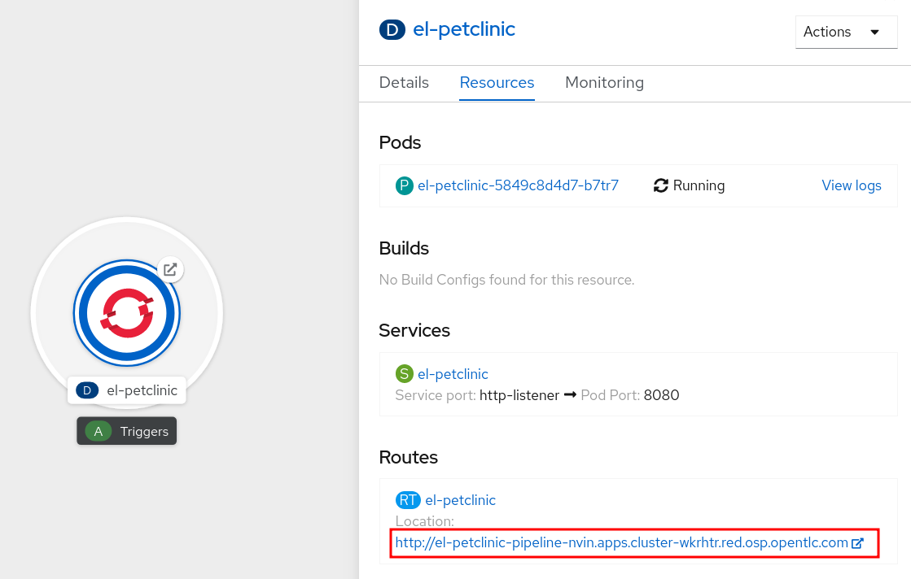
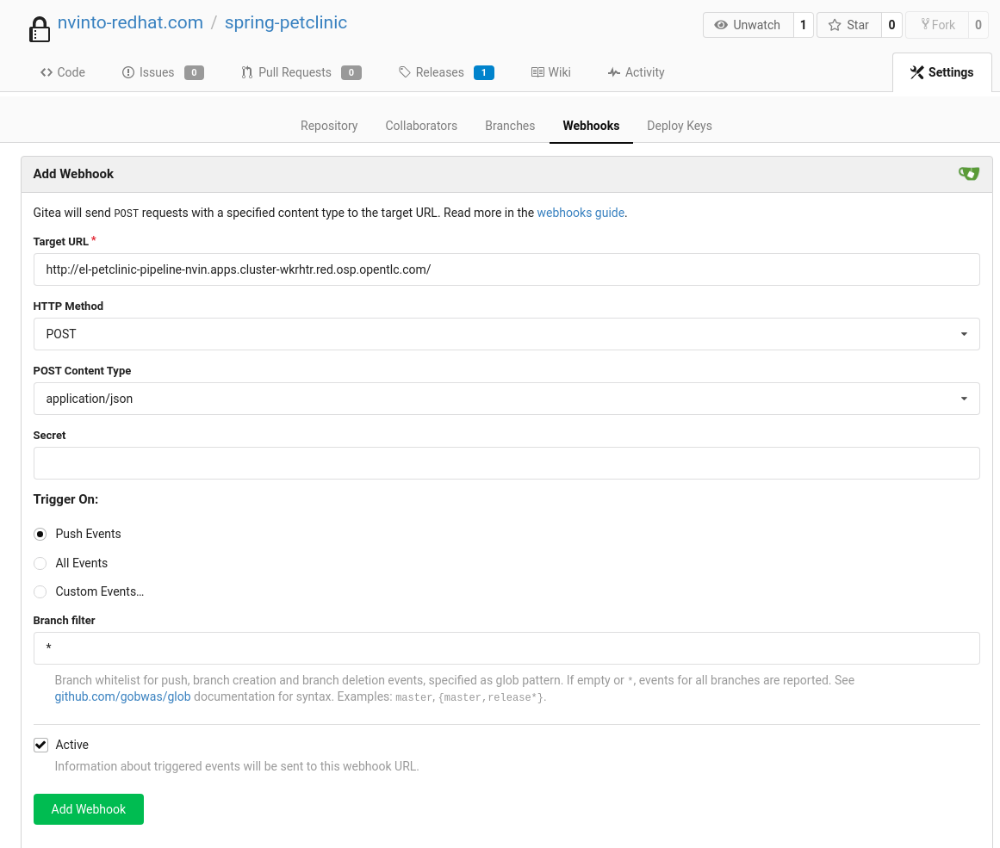
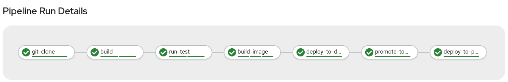
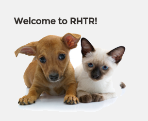

Most Git repository servers support the concept of web hooks — calling to an external source via HTTP(S) when a change in the code repository happens. OpenShift provides an API endpoint that supports receiving hooks from remote systems in order to trigger builds. By pointing the code repository’s hook at the OpenShift Pipelines resources, automated code/build/deploy pipelines can be achieved.
While Jenkins Pipelines were defined as BuildConfig with their webhook URLs, Tekton Pipelines have their own mechanism called Trigger.
Tekton Triggers enable us to configure Pipelines to respond to external events (Git push events, pull requests etc) such as Web Hooks.
Adding triggering support requires the creation of a TriggerTemplate, TriggerBinding, and an EventListener in our project.

-
TriggerTemplate: a trigger template is a template for newly created resources. It supports parameters to create specific PipelineResources and PipelineRuns.
-
TriggerBinding: validates events and extracts payload fields
-
EventListener: connects TriggerBindings and TriggerTemplates into an addressable endpoint (the event sink). It uses the extracted event parameters from each TriggerBinding (and any supplied static parameters) to create the resources specified in the corresponding TriggerTemplate. It also optionally allows an external service to pre-process the event payload via the interceptor field.
-
Review the necessary YAML manifests to set up a Trigger for pushes from the Gitea repository:
TriggerTemplateapiVersion: triggers.tekton.dev/v1alpha1 kind: TriggerTemplate metadata: name: petclinic spec: params: - name: git-revision - name: git-commit-message - name: git-repo-url - name: git-repo-name - name: content-type - name: pusher-name resourcetemplates: - apiVersion: tekton.dev/v1beta1 kind: PipelineRun metadata: labels: tekton.dev/pipeline: petclinic-pipeline name: petclinic-deploy-$(uid) spec: params: - name: APP_NAME value: petclinic - name: APP_GIT_URL value: $(params.git-repo-url) - name: APP_GIT_REVISION value: $(params.git-revision) pipelineRef: name: petclinic-pipeline workspaces: - name: app-source persistentVolumeClaim: claimName: app-source-pvc - name: maven-settings emptyDir: {}TriggerBindingapiVersion: triggers.tekton.dev/v1alpha1 kind: TriggerBinding metadata: name: petclinic spec: params: - name: git-repo-url value: $(body.repository.clone_url) - name: git-repo-name value: $(body.repository.name) - name: git-revision value: $(body.after)EventListenerapiVersion: triggers.tekton.dev/v1alpha1 kind: EventListener metadata: name: petclinic spec: serviceAccountName: pipeline triggers: - bindings: - name: petclinic template: name: petclinicEventListener RouteapiVersion: route.openshift.io/v1 kind: Route metadata: labels: app.kubernetes.io/managed-by: EventListener app.kubernetes.io/part-of: Triggers eventlistener: petclinic name: el-petclinic spec: port: targetPort: 8080 to: kind: Service name: el-petclinic weight: 100 -
Create all these objects using a provided YAML manifest:
oc create -f https://raw.githubusercontent.com/redhat-gpte-labs/rhtr2020_pipelines/master/workshop/content/tekton/triggers/petclinic-triggers.yaml -n pipeline-%guid% -
You should see that a new Deployment for the EventListener
el-petclinichas been created:oc get deployment -n pipeline-%guid%Sample OutputNAME READY UP-TO-DATE AVAILABLE AGE el-petclinic 1/1 1 1 1m -
Retrieve the route to the event listener:
oc get route el-petclinic -n pipeline-%guid%Sample OutputNAME HOST/PORT PATH SERVICES PORT TERMINATION WILDCARD el-petclinic el-petclinic-pipeline-%guid%.%CLUSTER_SUBDOMAIN% el-petclinic 8080 None -
In the Web Console, you should also see the new Deployment
el-petclinic. Make a note of the Route URL.
-
Configure Webhook in Gitea
-
Log into Gitea at %gitea_url% using credentials %ocp_username% and %gitea_password%.
-
After you logged in successfully, navigate to the
spring-petclinicrepository. -
At the top right click on Settings, then click the Webhooks tab.
-
Click the blue Add Webhook button and select the Gitea webhook type.
Add:
-
Target URL: the URL you copied from previously retrieved route to your event listener (make sure to use
http://at the beginning of the URL) -
HTTP Method: POST
-
POST Content Type: application/json
-
Secret: leave it blank
-
-
Click on Add Webhook.

Trigger it!
Change a file in the source code to automatically trigger your Pipeline.
-
From your repository in Gitea, navigate to
spring-petclinic / src / main / resources / messagesand editmessage.properties(click the little pencil icon to enter edit mode). -
Change the first from:
welcome=Welcometo:
welcome=Welcome to RHTR! -
Click Commit Changes to commit and push changes.
-
Now the EventListener should have been invoked through the Route that you setup as a Gitea Webhook and thus a new pipeline should have started.
-
Go back to the terminal and verify that the pipeline is running:
tkn pipeline ls -n pipeline-%guid% -
Get the logs from the latest running pipeline:
tkn pipeline logs -f -n pipeline-%guid% -
Alternatively in the Web Console, from left-side menu click Pipelines and then petclinic-pipeline to see running PipelineRuns.
 -
When the Pipeline has completed successfully, verify the new changes from pipeline-%guid%-dev and pipeline-%guid%-prod projects, clicking on Routes showing your changes deployed.
-
And again from the command line you can also validate that the applications are running:
oc get pod -n petclinic-%guid%-devoc get pod -n petclinic-%guid%-prodoc get routes -n petclinic-%guid%-devoc get routes -n petclinic-%guid%-prod -
You should see some some beautiful pets greeting you from RHTR! :)
